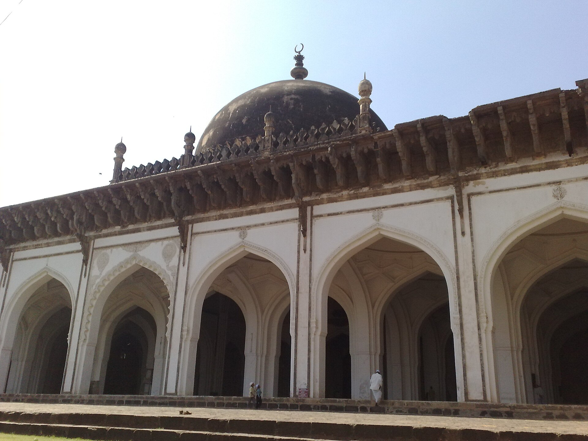
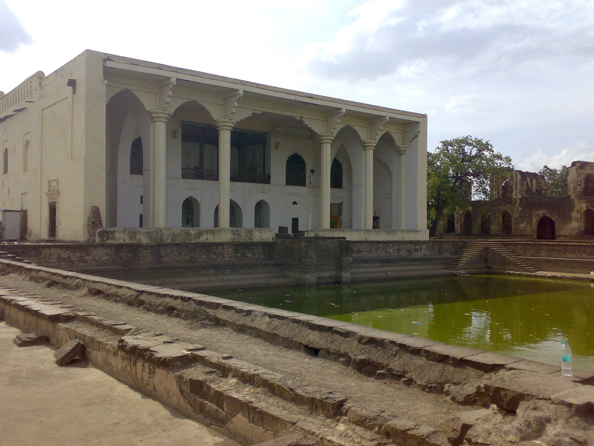
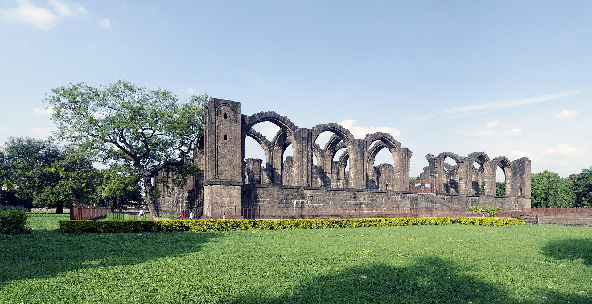

Gol Gumbaz
1626–1656
The largest single chamber in the world when it was finished, roofed by a dome forty-four metres across that is held up by eight arches leaning against each other. Whisper at the gallery and the dome answers.
6 · Vijayapura — the Adil Shahi capital
Independent 1490 · fell to Aurangzeb 1686
Bijapur built the largest dome in India, wrote love songs to Saraswati under a Muslim sultan, ran its water through underground tunnels in a rain-shadow desert, and mounted a fifty-five-ton bronze gun with a lion swallowing an elephant at the muzzle. Then it starved.
Yusuf Adil Shah seized Bijapur in 1481 in the chaos after Mahmud Gawan's murder and declared independence in 1490. His origins are one of the great unresolved stories of Indian history.
The dynasty's own account, transmitted by Ferishta — who wrote at this court: he was a son of the Ottoman Sultan Murad II. When his brother Mehmed took the throne and ordered the customary strangling of rivals, his mother bought a slave boy of the same age, handed him to the executioners, and smuggled the seven-year-old prince to Persia. He was educated at Ardabil and Sava, sailed for India at sixteen, and entered Bahmani service.
In 1502–03 he did something no other Indian ruler had done: he had the first Shia call to prayer in India sounded, and the names of the Twelve Imams put into the khutba. His restraint about it is more striking than the act — my faith for myself and your faith for yourselves — and though it provoked a brief war against him, he reverted the public rite rather than fight over doctrine. The state's official sect changed at least four times over the next century.
Ottoman sources know nothing of a surviving son of Murad II sold into slavery, and modern historians generally consider the descent unfounded. The likelier reconstructions make Yusuf a Georgian slave bought by Mahmud Gawan, a Persian, or an Aq Qoyunlu Turkoman.
In this world that is not a lesser origin so much as a different one. The Deccan sultanates were repeatedly founded by men who arrived as slaves or converts: Ahmadnagar's founder was the son of a captured Brahmin, Malik Ambar was an Ethiopian sold as a child, and the Bahmanis' own founder was, in legend, a ploughman.
What the claim tells you is what a Deccan sultan wanted to be — Persianate, royal, and connected to the great Islamic world beyond India.
Ibrahim Adil Shah II styled himself Jagadguru — world-teacher — which is an extraordinary title for a Muslim sovereign, and meant it. His Kitab-i Nauras, the book of nine rasas, is fifty-nine songs and seventeen couplets in Dakhni: hymns to Saraswati and Ganesha stand beside praise of the Prophet and of the Sufi saint Gisu Daraz. He wrote about his favourite elephant Atish Khan and his tambura, which he named Moti Khan.
He signed himself, in one line, as the tanpura-player who became learned by the grace of god, living in the city of Vidyanagari — a Muslim king using a Sanskrit name for his own capital.
He founded a whole township, Nauraspur, to give physical form to the idea of a musical city. It was left unfinished and later wrecked. And under him Bijapur's population is estimated at around a million, its court a meritocracy of Persians, Africans and Europeans — the setting for the Deccani school of painting, which fused Turkish, Persian and Indian sources into something with no equivalent in the Mughal north.
Completed at Bijapur on 17 August 1570 under Ali Adil Shah I and now in the Chester Beatty Library, the 'Stars of the Sciences' carries some 876 miniatures.
Its subjects run from angels, planets and the degrees of the zodiac to Sufi talismans, magical spells, horoscopes, weapons — and Hindu goddesses, drawn as tall slender women in South Indian dress.
It is the earliest landmark of the Deccani painting style, and its astronomical imagery may derive from Ottoman Turkish models, which fits a court that claimed an Ottoman prince as its founder.
Muhammad Adil Shah's tomb is a single cube 47.5 m on a side carrying a dome about 44 m across, enclosing roughly 1,700 m² of unobstructed floor — a larger covered space than the Pantheon's.
The engineering is the interest. The dome is not carried on piers or a conventional drum. Eight arches spring from the walls and intersect each other, and the mass of masonry they throw inward acts as a counterweight against the dome's outward thrust. The builders solved the problem by making the building's own weight the bracket. The system is essentially unknown outside Bijapur.
Around the base of the dome runs the Whispering Gallery, where a low sound carries clean around the circumference. No architect is named anywhere in the contemporary record.
| Begun / completed | c. 1626 / 1656 |
| Dome, external | About 44 m across |
| Total height | 60.5 m |
| The cube | 47.5 m on each side |
| Floor enclosed | About 1,700 m², with nothing holding up the middle |
| Structure | Eight intersecting arches acting as counterweights |
| Corner towers | Four, of seven storeys each |
Guidebooks and heritage sites agree that a whisper carries some thirty-seven to forty metres across the gallery and that a clap returns up to eleven times over about six seconds.
The numbers are not in the technical literature, and visitors in practice usually count about seven clear repetitions. The effect is entirely real; the arithmetic around it is folklore.
The same caution applies to the local claim that the Ibrahim Rauza inspired the Taj Mahal. The chronology allows it — the Rauza was completed in 1626–27, the Taj begun in 1632 — but nothing evidences it.
Bijapur sits in semi-arid country, and the Adil Shahis built the most sophisticated urban hydraulics in the sixteenth-century Deccan to solve it: Persian-derived karez tunnels tapping groundwater and running it into the city by gravity, a dam at Torvi collecting rainwater, the Begum Talab reservoir two miles south, and terracotta pipes carrying its water nearly five kilometres in.
Pressure through the network was managed by masonry water towers called ganj, one of which still carries its dated Persian inscription. And where the water arrived, they built stepwells worth looking at: the Taj Bawadi of 1620, fifty-two feet deep, with octagonal towers beside it holding rooms where travellers slept.
In 1659 Bijapur sent Afzal Khan to finish the young Maratha chief Shivaji. He came with something like twelve thousand horse, ten thousand foot, elephants and eighty guns. Shivaji drew him into the Sahyadri hills below Pratapgad and agreed terms: both unarmed, one attendant each.
What happened in the embrace depends entirely on which chronicle you read. The Marathi accounts say Afzal Khan struck first with a concealed dagger, and that Shivaji — in hidden mail — disembowelled him with the wagh nakh, hooked blades worn across the knuckles. The Persian accounts say it was a straightforward assassination under flag of parley. There is no neutral witness. Shivaji built his enemy a tomb at the foot of the fort, and it is still there, and still contested.
Twenty-six years later Aurangzeb came. Prince Azam Shah invested the city in April 1685 with some fifty thousand men; the walls, the moat and Malik-e-Maidan held; Sambhaji's Marathas cut the Mughal supply lines. Aurangzeb arrived himself in July 1686 with reinforcements bringing the total near a hundred thousand.
There was no storm. There was hunger. Bijapur capitulated on 12 September 1686, and Sikandar Adil Shah was brought before the emperor in silver chains. Famine and then cholera followed; a census in 1690 found the population halved. The last sultan died at Daulatabad in 1700.
Bara Kaman — 'twelve arches' — was begun by Ali Adil Shah II in 1672 and got two of them up. Bijapur tells two stories about why.
One: work was stopped because the finished building's shadow would have fallen across the Gol Gumbaz. Two: the sultan was killed by his own father, who would not allow his tomb to be eclipsed.
The second is impossible — Muhammad Adil Shah died in 1656, sixteen years before the building was started. Both are folklore. What is real is the site itself: two enormous arches standing over open graves, the most affecting ruin in the city precisely because it never got finished.
Cast in bell metal in 1549 by the Turkish founder Muhammad bin Husain Rumi — and cast for Ahmadnagar, not for Bijapur, which took it as a prize.
It weighs about fifty-five tons, is 4.45 m long, and has a muzzle bore of 700 mm cast as a lion's head with its jaws open around an elephant: the standard Deccani emblem of one sultanate devouring another. It carries three inscriptions — two from the casting, and a third that Aurangzeb added after 1686.
Local lore says the barrel stays cool in full sun and that the gunners plugged their ears and dived into a water tank before firing. It was still killing Mughals on the siege lines in 1685.
“Ibrahim the tanpurawala became learned due to grace of god, living in the city of Vidyanagari.”Ibrahim Adil Shah II, Kitab-i Nauras
An oval of walls about ten kilometres round with ninety-six bastions, an inner citadel at the centre, and the two great tombs facing each other across the whole city — Gol Gumbaz outside the east wall, Ibrahim Rauza outside the west.
1626–1656
The largest single chamber in the world when it was finished, roofed by a dome forty-four metres across that is held up by eight arches leaning against each other. Whisper at the gallery and the dome answers.

completed 1626–27
A tomb and a mosque facing each other on one plinth, commissioned by Taj Sultana for her husband. Carved jali screens like textile, and a stone lotus hanging from a stone chain, each cut from a single block.

begun 1576
Never finished — the twin minarets stop at the buttresses. Its gilded mihrab is compared to Córdoba's, and Aurangzeb had the floor ruled into 2,250 rectangles, one for each worshipper.

c. 1561
The Sky Palace: a durbar hall whose central arch spans over sixty feet, now open to the weather. Traditionally the room where Sikandar Adil Shah was brought before Aurangzeb in silver chains.
mid-17th c.
The stump of Muhammad Adil Shah's seven-storey pleasure tower inside the citadel — the vertical counterpart to his horizontal masterpiece across town.

1646
Built as a hall of justice and turned into a reliquary when two hairs from the Prophet's beard were installed in it, with a water tank in front and painted panels inside.

begun 1672
Two arches of a planned twelve, standing over open graves. The most affecting thing in Bijapur, and the only one that owes its power entirely to being unfinished.

gun cast 1549
Fifty-five tons of bell metal on the western wall, its muzzle a lion swallowing an elephant. Cast for Ahmadnagar, captured by Bijapur, inscribed by Aurangzeb.
16th c.
A round watchtower twenty-four metres high, climbed by steps that spiral up the outside of it, with two heavy guns on the platform at the top.
1620
The largest stepwell of the sultanate, fifty-two feet deep, built by Ibrahim II for his wife — with octagonal towers alongside holding rooms where travellers could sleep.
1651
The reservoir two miles south that fed the city through nearly five kilometres of terracotta pipe, its pressure regulated by masonry water towers along the line.
c. 1599
Ibrahim II's township of music, founded to give the Kitab-i Nauras somewhere to live. Left unfinished, sacked in the Mughal incursions, and now a field with a palace temple in it.